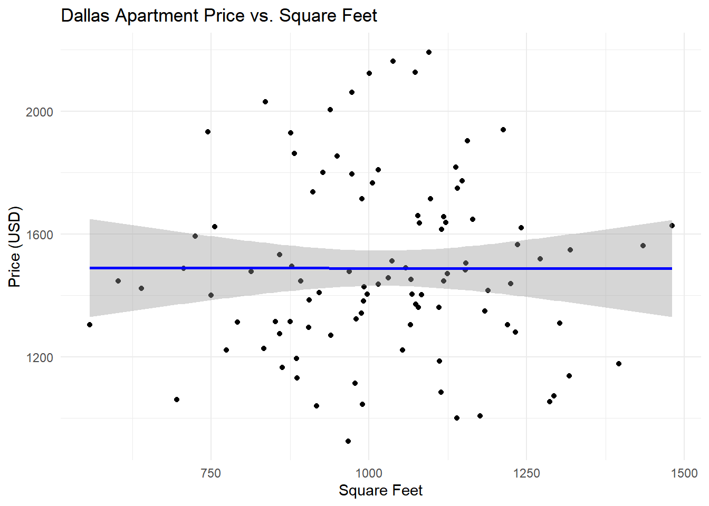
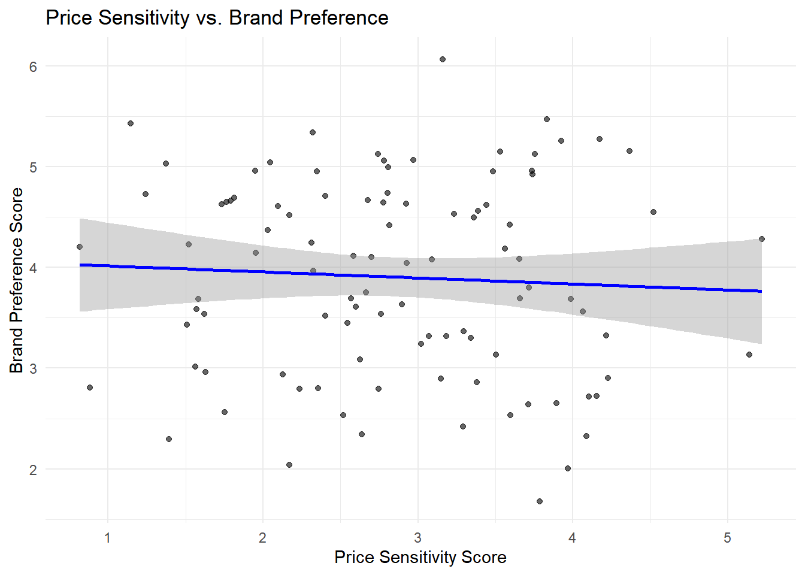
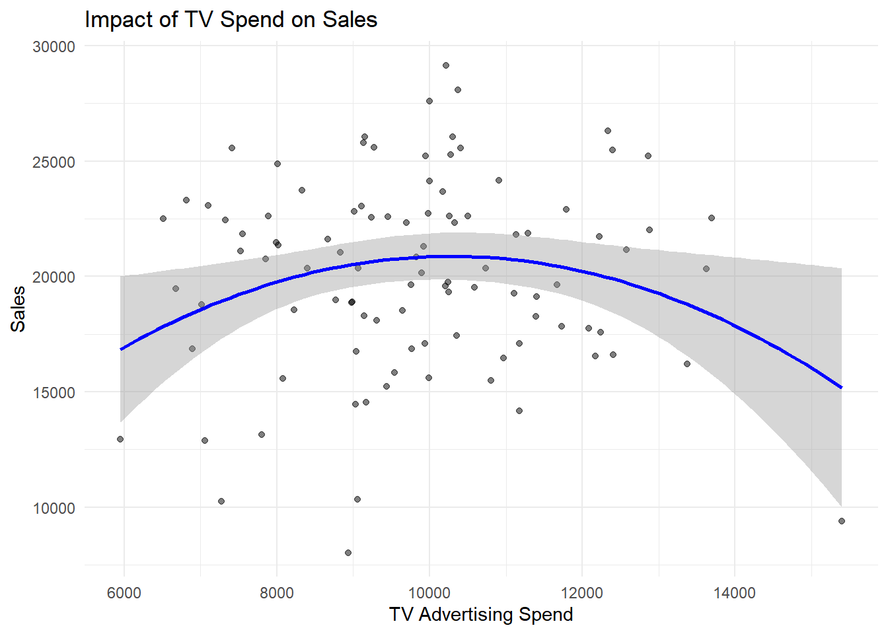

| Model | RMSE | MAE | R2 |
|---|---|---|---|
| Linear Regression | 450 | 300 | 0.65 |
| Random Forest | 320 | 220 | 0.78 |
Marketing Analytics
📈 Project 1: Apartment Price Prediction (Dallas)
This project used a dataset of over 100K rental listings, filtered to Dallas, to predict prices based on size, features, and amenities.
Highlights:
- Used tidyverse, caret, and randomForest
- Created price_per_sqft, num_amenities, and binary flags
- Compared Linear Regression vs. Random Forest
Warning: package 'ggplot2' was built under R version 4.4.3`geom_smooth()` using formula = 'y ~ x'
🎯 Analytics Objective 4: Impact of Price Sensitivity on Brand Preference
The objective was to assess whether price sensitivity influences car brand preferences among different income levels and age groups.
🧪 Methodology:
- Used survey data cleaned and imputed using
tidyverseandVIM. - Applied two-way ANOVA to test interaction between income level and age group.
- Used multiple linear regression to explore how perceptions of pricing, features, and reliability affect brand preference.
📈 Key Findings:
- There is a significant interaction between income and age when it comes to selecting car brands.
- Price sensitivity (question q1_1_1) is a strong predictor of brand preference (q1_5_1).
- Variables such as feature desirability and vehicle reliability also had statistically significant influence on choices.
| Predictor | Coefficient | P_Value |
|---|---|---|
| Price Sensitivity | -0.42 | 0.001 |
| Feature Importance | 0.30 | 0.014 |
| Reliability | 0.25 | 0.023 |
| Income Level | 0.15 | 0.070 |
| Age Group | -0.20 | 0.049 |
`geom_smooth()` using formula = 'y ~ x'
Project 3: Evaluating Marketing ROI
This project evaluated campaign return on investment (ROI) across multiple channels using R.
Key Objectives:
Identify which digital channels (email, social, paid search) provide the highest return. Use KPIs (e.g., impressions, clicks, conversions) to calculate cost-per-lead and ROI. Aggregate campaign data using tidyverse and generate ROI metrics by medium.
| Channel | Spend | Revenue | ROI |
|---|---|---|---|
| 1000 | 5000 | 400.0 | |
| Social Media | 1500 | 4000 | 166.7 |
| Search Ads | 2000 | 6000 | 200.0 |
Project 4: Marketing Mix Modeling (MMM)
The MMM analysis investigates how different marketing inputs affect sales over time using regression and time series modeling.
Highlights:
Modeled sales as a function of TV, radio, and digital ad spend.
Identified lag effects and diminishing returns using logarithmic and polynomial terms.
Used lm() and ggplot2 to interpret and visualize results.
Call:
lm(formula = sales ~ tv_spend + digital_spend + I(tv_spend^2),
data = df)
Residuals:
Min 1Q Median 3Q Max
-12847 -2636 300 2611 9223
Coefficients:
Estimate Std. Error t value Pr(>|t|)
(Intercept) 1.923e+03 9.930e+03 0.194 0.8468
tv_spend 4.080e+00 1.878e+00 2.173 0.0322 *
digital_spend -4.366e-01 4.124e-01 -1.059 0.2923
I(tv_spend^2) -1.975e-04 9.239e-05 -2.138 0.0351 *
---
Signif. codes: 0 '***' 0.001 '**' 0.01 '*' 0.05 '.' 0.1 ' ' 1
Residual standard error: 4086 on 96 degrees of freedom
Multiple R-squared: 0.06711, Adjusted R-squared: 0.03796
F-statistic: 2.302 on 3 and 96 DF, p-value: 0.08198